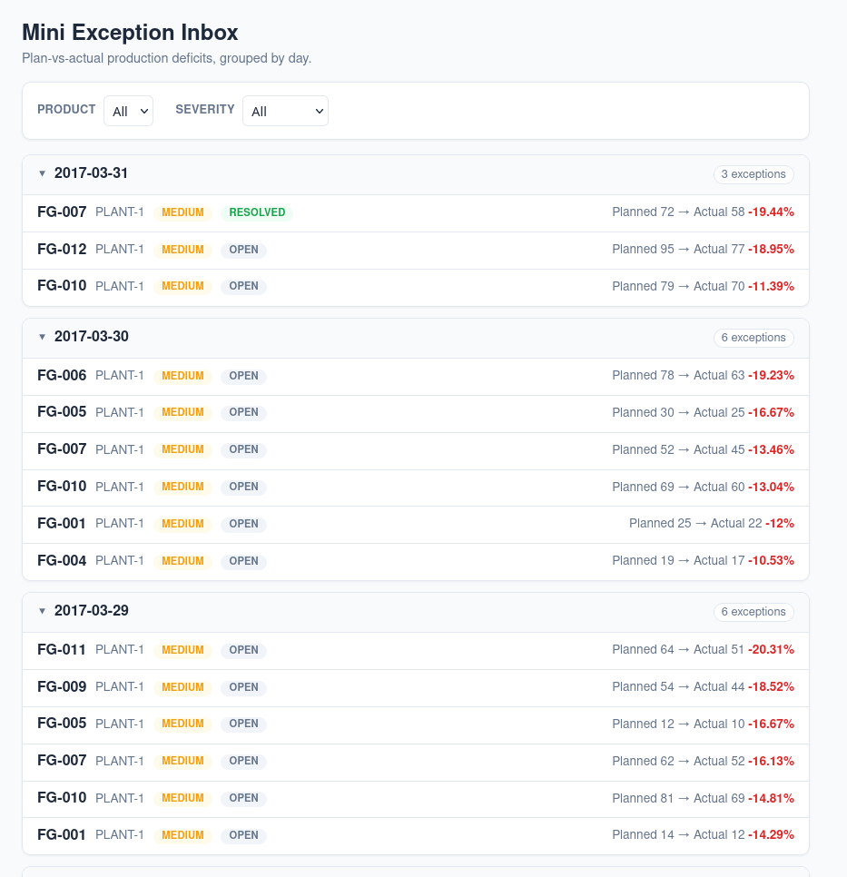
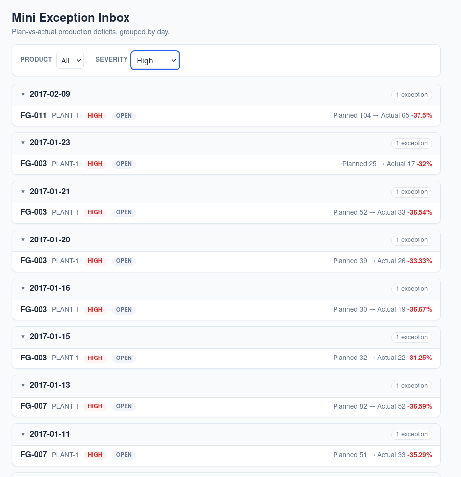
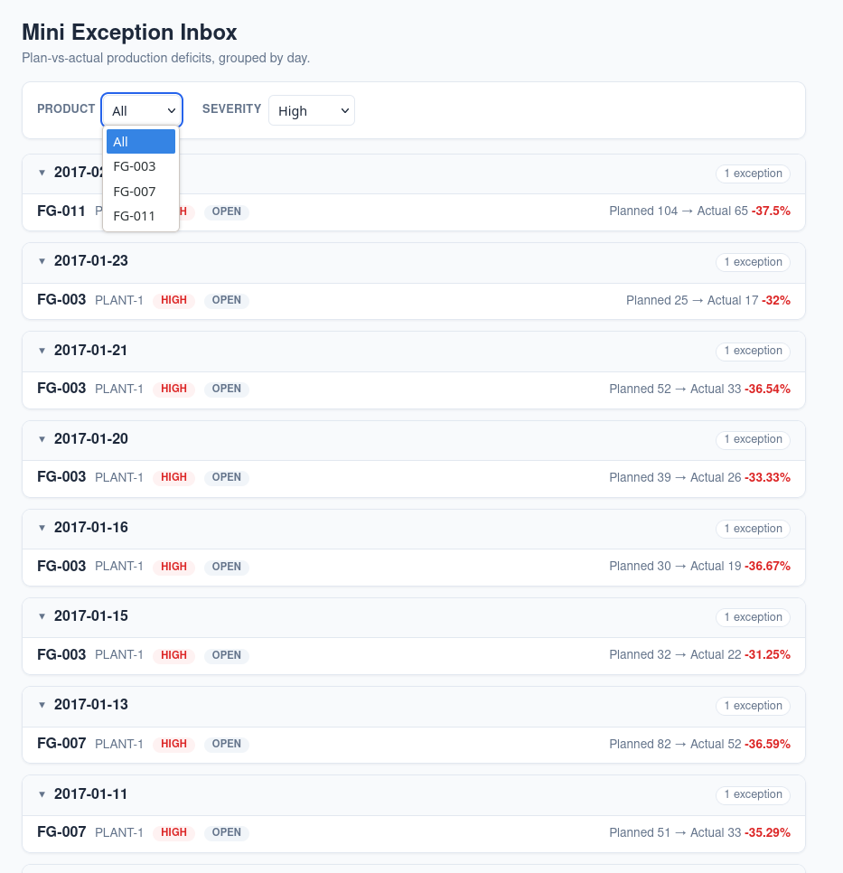
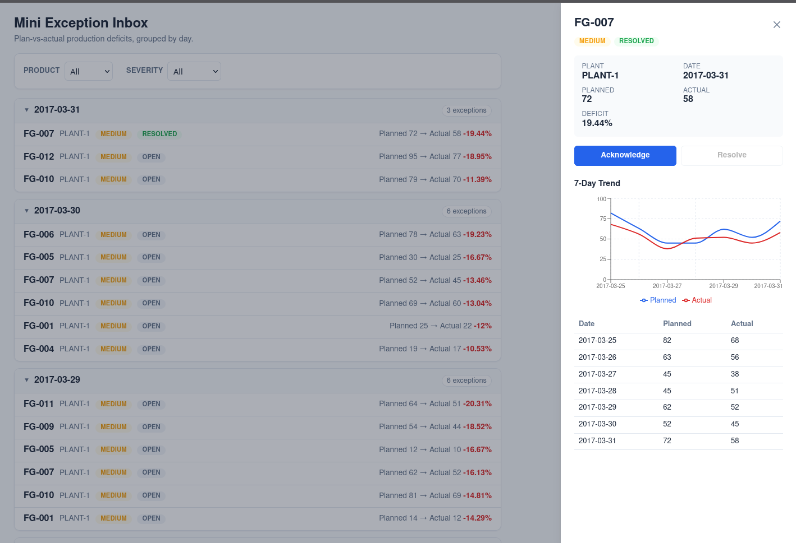
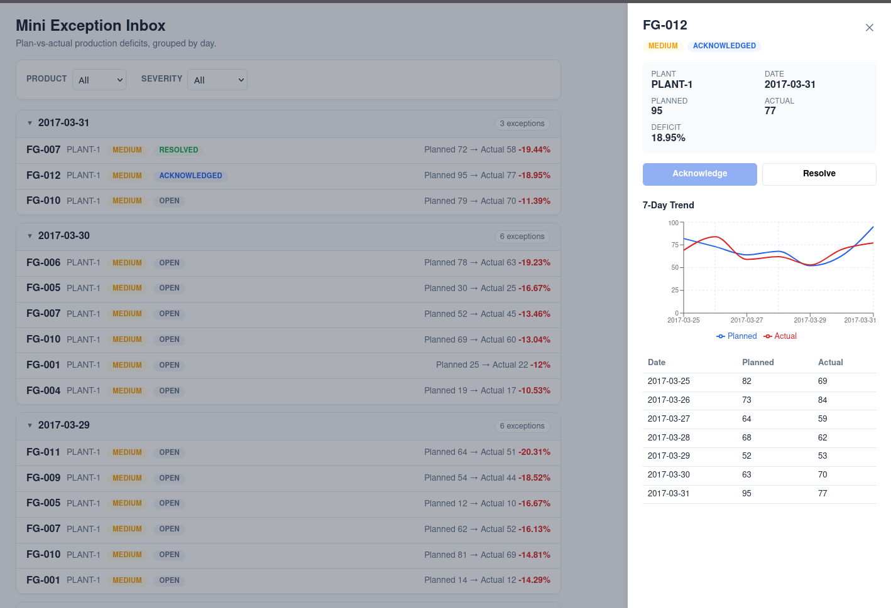
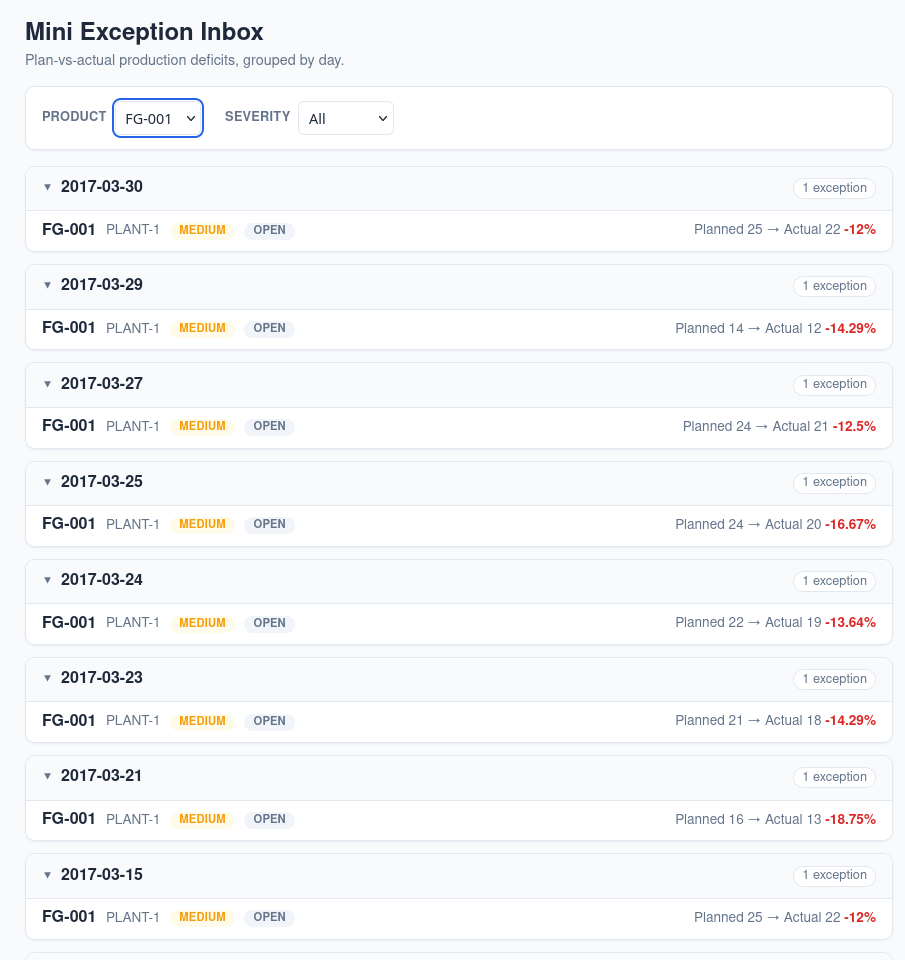
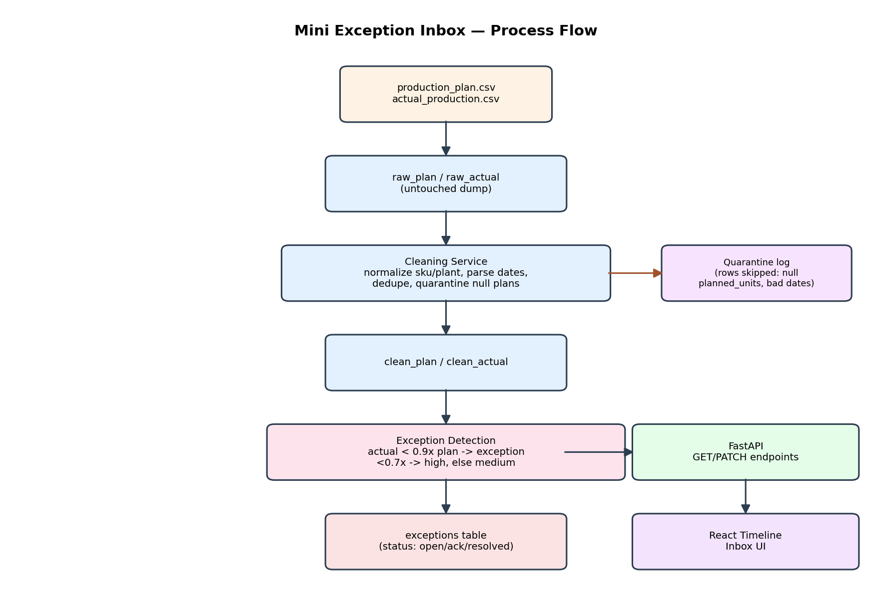
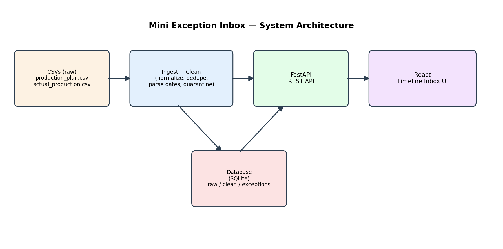

error initializing buildkit: failed to find runc binary — Fedora's Docker package didn't pull in runc as a dependency.
Two messy CSVs in, a day-by-day operator inbox out. This walks through the data findings, schema, API, UI, and the real debugging that went into getting Docker Compose working end to end.
Exceptions are grouped into a day-by-day timeline — newest day first, worst deficit first within a day — exactly as specified. Every screenshot below is the actual running app.






The assignment's own hint — "look at the data before you load it" — turned out to matter. Both CSVs were inspected with pandas before any ingestion code was written.
" fg-010 " vs FG-010) across ~18 SKU variants. A naive join would have silently missed them. Fixed by normalizing both sides with .strip().upper() during cleaning, not by patching the join.
2017-03-05), but at least one row was 12/03/2017 — genuinely ambiguous (Dec 3 or Mar 12). Crashed a naive single-format parser; fixed with a fallback parser and flagged the day/month assumption explicitly rather than treating it as settled.
Raw and clean data are kept in separate tables so cleaning logic can be re-run without re-touching the source files, and exceptions are materialized — not computed on the fly — so status changes persist.


raw_plan(id, plan_date_raw, plant_raw, sku_raw, planned_units_raw)
raw_actual(id, date_raw, plant_id_raw, product_code_raw, units_produced_raw)
| |
v v
clean_plan(id, date, plant, product_code, planned_units)
clean_actual(id, date, plant, product_code, units_produced)
+-------------+-------------+
v
exceptions(
id, product_code, plant, date,
planned_units, actual_units, deficit_pct,
severity, -- "high" | "medium"
status, -- "open" | "acknowledged" | "resolved"
created_at, updated_at
)
docker-compose up builds both images and runs the full ingest → clean → detect → serve
pipeline automatically. Getting there on Fedora surfaced two real, non-obvious environment issues.
error initializing buildkit: failed to find runc binary — Fedora's Docker package didn't pull in runc as a dependency.
sudo dnf install runc -y + systemctl restart docker. Root cause found by reading the actual journalctl output rather than guessing.
644, world-readable). A plausible-looking chmod -R a+rX fix did not resolve it — a real signal the diagnosis was still wrong.
:z suffix on the volume mount (./backend/data:/app/data:z) — confirmed working end to end afterward.
| Decision | Reasoning |
|---|---|
| SQLite over Postgres | Zero setup for this scope; schema translates directly if scaling is needed later. |
No pagination on GET /exceptions |
Dataset is small (~1000 rows); would add limit/offset for a larger one. |
| Unmatched plan/actual rows silently skipped | Simplest correct behavior for this scope — a v2 could surface these as their own category. |
| No auth on PATCH | Out of scope for the assignment goals; required before this touches a real ERP. |
| Frontend Docker image runs the Vite dev server | Fine for a demo; production would use a multi-stage build serving static assets via nginx. |
Full detail, verbatim prompts, and the specific case where AI got something wrong are in
AI_USAGE.md. Short version:
12/03/2017. Caught by actually running the pipeline and reading the real traceback, not by inspection alone.